図解：ビーダーマイヤー
ビーダーマイヤーの成立と変化
- 1815〜
 抑圧の下で家庭へメッテルニヒが検閲
抑圧の下で家庭へメッテルニヒが検閲
市民は私生活に関心 - 19世紀前半
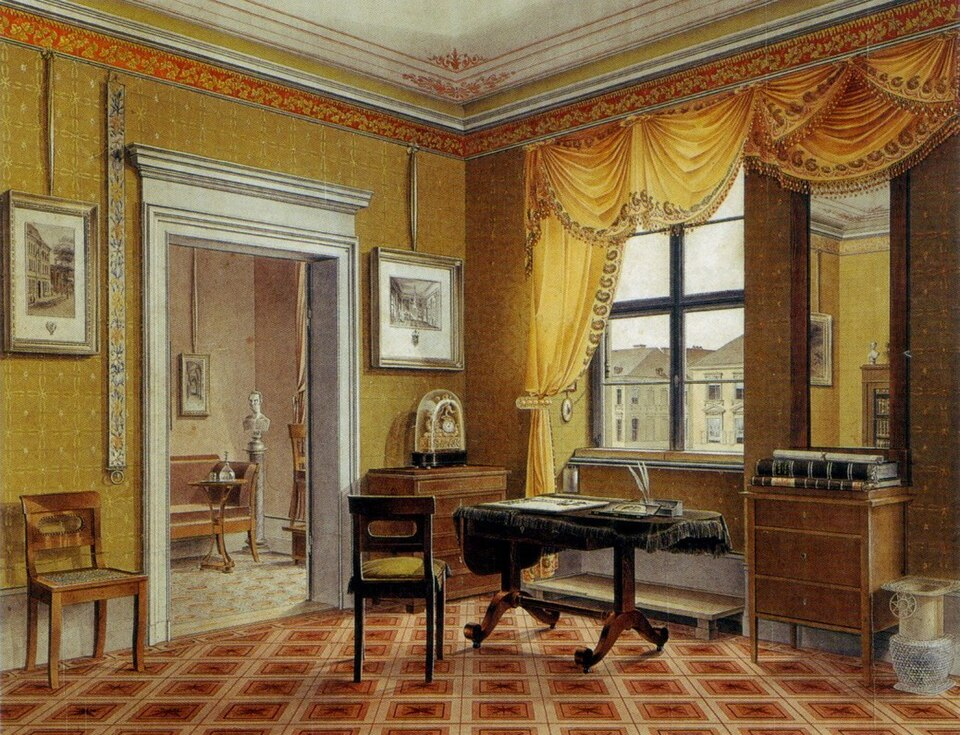
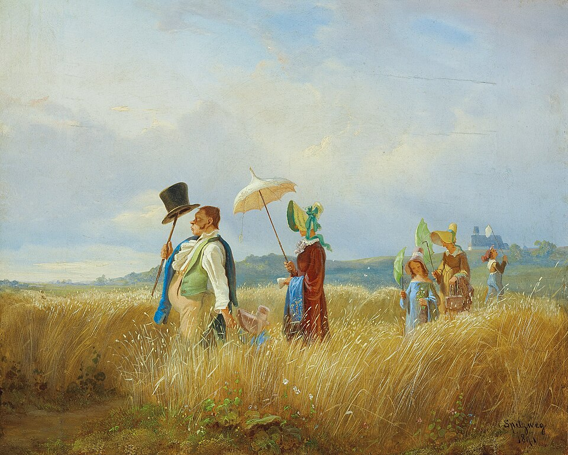
居心地のよい暮らし地元の木材の簡素な家具
室内画や散歩が流行 - 1848〜
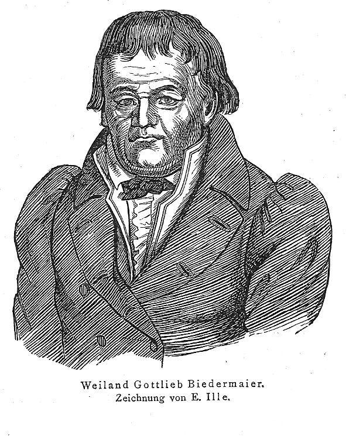
体制崩壊と風刺三月革命で検閲が終わる
内向きな市民を揶揄 - 1850年代〜
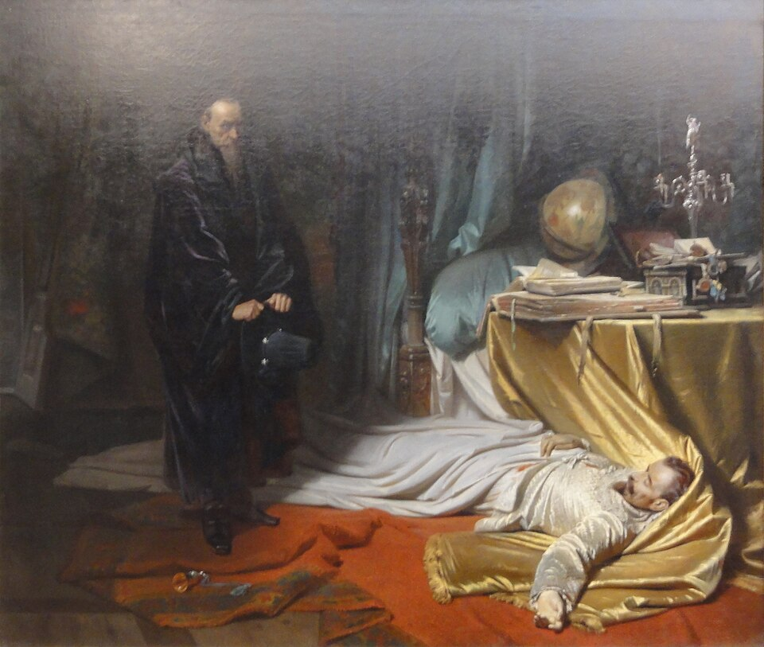
歴史主義へ統一の気運を歴史画に
一方で簡素な椅子も普及
以前の室内と何が違うか
図版の出典
- 《刺繍をする女性》ゲオルク・フリードリヒ・ケルスティング：出典（Public domain / PD-Art / PDM）
- 《黄色い室内を描いた室内画》レオポルト・ツィールケ：出典（Public domain / PD-Art / PDM）
- 《日曜日の散歩》カール・シュピッツヴェーク：出典（Public domain / PD-Art / PDM）
- 《ゴットリープ・ビーダーマイヤーの肖像（架空人物）》E. Ille（図版の署名）：出典（Public domain / PD-Art / PDM）
- 《ヴァレンシュタインの遺骸の前のゼーニ》カール・テオドール・フォン・ピロティ：出典（Public domain / PD-Art / PDM）
重要人物
時代をつくった政治家
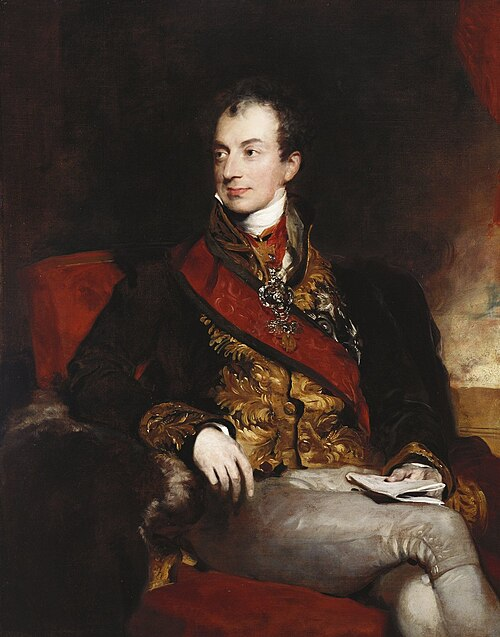
メッテルニヒオーストリア外相ウィーン体制を主導。カールスバート決議で検閲を強化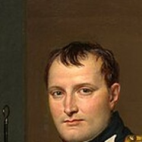
ナポレオン皇帝侵略戦争で各地に被害。1815年に戦争が終わる- ビスマルク政治家1871年、プロイセン中心にドイツ帝国を成立させる
風刺と検閲
家具をつくった人
同時代のロマン主義
市民文化の名前と評価
市民の家庭生活に根差す様式
動画 0:57～ビーダーマイヤーは、19世紀前半のドイツ・オーストリアで見られた文化様式です。市民の家庭生活に根差し、その後の近代デザインなどへ広く影響を与えました。19世紀初頭、ナポレオンの侵略戦争はこの地域にも脅威となり、1806年には約千年続いた神聖ローマ帝国が崩壊しました。
芸術家たちは、当時主流の新古典主義に反発し、感情や個性、民族的な精神を重んじる表現を求めました。北部のフリードリヒやルンゲは、ドイツ・ロマン主義の代表です。南部ではナザレ派が宗教的精神を取り戻そうと、ローマでフレスコ画の復興などに取り組みました。そうした時代に、家庭や日常へ関心を向けた別の文化として、ビーダーマイヤーがあります。
 画像を拡大 ＋
画像を拡大 ＋
《氷の海（北極海の難破船）》
- 作者
- カスパー・ダーヴィト・フリードリヒ
- 制作時期
- 1823～1824年
- 所在地・所蔵
- ハンブルク美術館（HK-1051）
- 素材・形式
- 油彩・カンヴァス
- 原題
- Das Eismeer
- 動画の年代
- 1823年
出典・画像について
 画像を拡大 ＋
画像を拡大 ＋
《朝（小さな朝／第1稿）》
- 作者
- フィリップ・オットー・ルンゲ
- 制作時期
- 1808年
- 所在地・所蔵
- ハンブルク美術館（HK-1016）
- 素材・形式
- 油彩・カンヴァス
- 原題
- Der Morgen
出典・画像について
名前の由来と評価の変化
動画 1:54～名前は、19世紀のミュンヘンで出た風刺雑誌『フリーゲンデ・ブレッター』の架空の人物、ゴットリープ・ビーダーマイヤーに由来します。政治や国際情勢には無関心で、家庭や身の回りだけに関心を向ける人物でした。政治の話では聞こえないふりをし、新聞ではニュースを飛ばして天気欄だけ読む、といった小市民的な姿が、皮肉を込めて描かれました。

《ゴットリープ・ビーダーマイヤーの肖像（架空人物）》
- 作者
- E. Ille（図版の署名）
- 制作時期
- 1855年
- 所在地・所蔵
- 掲載誌：フリーゲンデ・ブレッター第21年、第493号、103頁。スキャン原本の所蔵先未記載
- 素材・形式
- 雑誌掲載挿絵
- 原題
- Bildnis Gottlieb Biedermaiers
出典・画像について
図版下部に「Zeichnung von E. Ille」と署名がある。フルネームは推測で補わない。架空の肖像主は人名下線の対象外。
画像出典：The original uploader was Goerdten at German Wikipedia.
Public domain / PD-Art / PDM
作品情報：作品・画像・利用条件
19世紀中頃は、フランスの二月革命、プロイセンの三月革命など、市民が国家の抑圧に対して自由主義や国民主義、改革を求めて動いた時代です。政治から目をそらし家庭に閉じこもる態度は、現実逃避として揶揄されました。一方で、愚直で素朴な人柄が親しみを集め、人気にもなりました。この人物が生まれた背景には、19世紀前半の市民が政治に触れず、家庭と日常の安定を大切にしていたことがあります。後からその時代を振り返り、小市民的な態度を風刺する名前が付いたのです。
当時の家具や室内装飾は、19世紀中頃には貧乏くさいと小馬鹿にされました。しかし後半になると、余計な装飾のない洗練されたデザインと評価されるようになります。後のバウハウスやアール・デコなど、現代的なデザインの先駆けと捉えられることもあります。その暮らしが生まれた背景には、戦争後の疲弊と、ウィーン体制による自由主義運動の抑圧がありました。
戦後の秩序と抑圧
ウィーン会議と正統主義
動画 3:56～1815年、ナポレオン戦争が終わります。十年以上に及ぶ戦争は、敗れたフランスだけでなく、ヨーロッパ各国へ甚大な人的・経済的被害を与えました。緩やかに結び付いていた神聖ローマ帝国も、1806年にその歴史を閉じています。戦後に諸国を立て直すため開かれたのが、ウィーン会議です。「会議は踊る、されど進まず」ともいわれ、フランスではブルボン朝の王政が復活し、ルイ18世が即位しました。

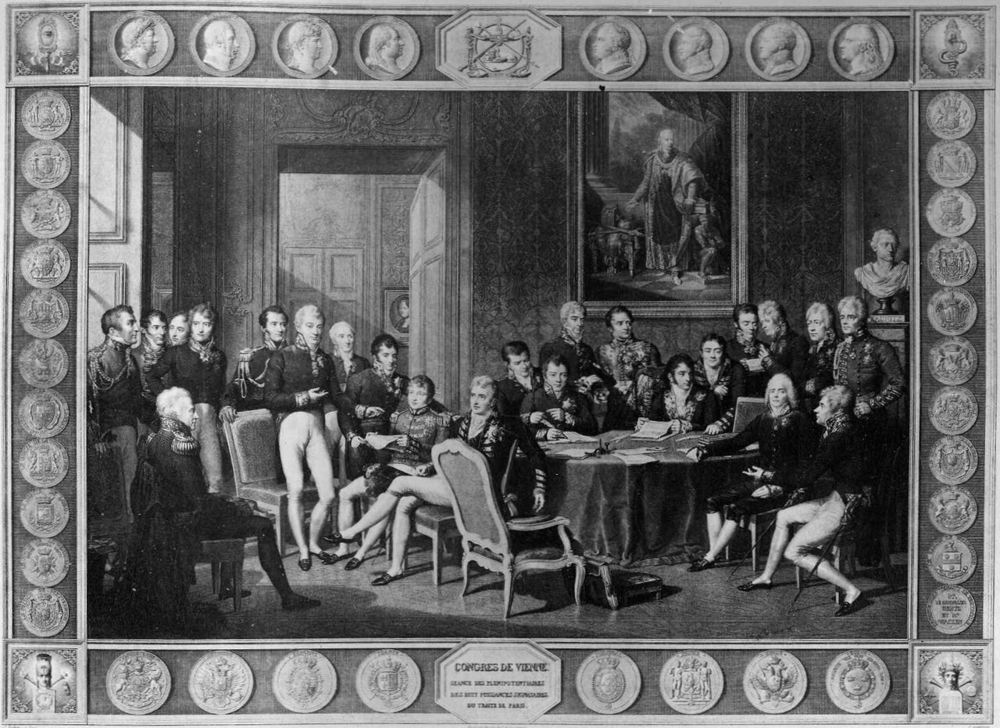
画像を拡大 ＋《ウィーン会議の版画（装飾枠付き版）》
- 作者
- ジャン・ゴドフロワ（版刻）、ジャン＝バティスト・イザベイ（原画）
- 制作時期
- 1819年
- 所在地・所蔵
- 候補出典：Piguet競売。現在の所蔵先未確認
- 素材・形式
- 版画
- 原題
- Congrès de Vienne
- 動画の年代
- 1814～1815年（会議の年）
出典・画像について
イザベイ原画、ゴドフロワ版刻《ウィーン会議》（1819年）の、肖像メダル装飾の枠付きの刷り。
画像出典：ジャン＝バティスト・イザベイ原画 / Wikimedia Commons
Public domain
作品情報：画像出典・利用条件 · 作品・画像・利用条件
制作メモ
動画268秒の画面と同じ構成。
会議は、秩序を回復し平和を維持するため、正統主義と勢力均衡を原則としました。正統主義は、革命以前の王政を中心とする秩序へ戻すという考えです。1789年のフランス革命で王政が倒れ、身分制が崩れ、市民が政治の主体となりましたが、その後は混乱が続きました。ロベスピエールの恐怖政治も、その一例です。軍事力で混乱を収めたナポレオンは英雄として歓迎され、やがて権力の集中によって独裁体制を築きます。その侵略戦争が各地へ被害と混乱を広げたため、革命以前の王政を復活させて秩序を回復しようとしたのです。
メッテルニヒの抑圧と検閲
動画 5:33～ウィーン会議の中心となったオーストリア外相メッテルニヒは、反革命的な正統主義に基づく国際秩序を作ろうとしました。ドイツ諸国は、オーストリアを盟主とするドイツ連邦へ再編されます。35の君主国を含む緩やかなつながりで、各地に君主がいたことに加え、完全に統一すれば強大な国になるという懸念もありました。諸国の勢力均衡を保つためです。会議で成立した国際的な仕組みをウィーン体制といい、メッテルニヒは革命を警戒し、自由主義運動を抑えて、その維持に力を尽くしました。
抑圧を受け入れず行動した団体の代表が、ブルシェンシャフトです。ウィーン会議直後にできた学生団体で、諸国が協力してナポレオンを破った自信を背景に、ドイツの統一と旧体制の打破、自由主義を目指しました。まとまればフランスのような強国になれる、という意識もあったのです。
メッテルニヒは1819年のカールスバート決議を主導して、運動を抑え込みます。大学の秘密結社禁止、書物の検閲、陰謀を監視・捜査する委員会の設置などが進み、自由主義的な大学教授や政治家は左遷・失職へ追い込まれました。
検閲を表す例が、1827年に出たハイネの『ル・グランの書』にあります。政治的な言葉が検閲に触れるため、ほとんどを伏せ字にしたというユーモアです。しかし伏せ字は読者の想像をかき立て、かえって過激に深読みする人もいました。後には伏せ字さえ禁じる布告が出されるなど、検閲は書籍だけでなく演劇などの文化活動へも及びました。

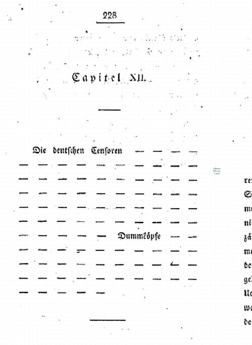
画像を拡大 ＋《『イデーン――ル・グランの書』第12章冒頭》
- 作者
- ハインリヒ・ハイネ（著）
- 制作時期
- 不明（画面の刊本の年）
- 所在地・所蔵
- 画面刊本・所蔵先未確定
- 素材・形式
- 印刷書籍
- 原題
- Ideen. Das Buch Le Grand, Capitel XII
- 動画の年代
- 1827年（初出年）
出典・画像について
1827年初版『Reisebilder』第2巻の228頁。
画像出典：Corvey Digital Collection / Wikimedia Commons
Public domain
作品情報：画像出典・利用条件 · 作品・画像・利用条件 · 所蔵館の作品ページ
制作メモ
第12章の見出しと検閲を風刺するダッシュの配列が動画に一致する。
家庭・家具・身近な自然
内の暮らしと地域の素材
動画 7:57～中産階級の市民は、公的な政治参加を諦めざるを得ず、関心を外側の政治から内側の家庭・私生活へ向けました。ささやかな幸せ、家庭の平穏、身近な生活の充実を求めることが、この文化を形づくります。監視されるかもしれない外界に対し、家庭はプライバシーを守る唯一の聖域になりました。裁縫や音楽などの趣味も好まれ、その美意識が最も表れたのが室内装飾でした。
画像を拡大 ＋
《刺繍をする女性》
- 作者
- ゲオルク・フリードリヒ・ケルスティング
- 制作時期
- 1817年
- 所在地・所蔵
- ワルシャワ国立美術館（M.Ob.2073 MNW）
- 素材・形式
- 板に油彩
- 原題
- Die Stickerin
出典・画像について

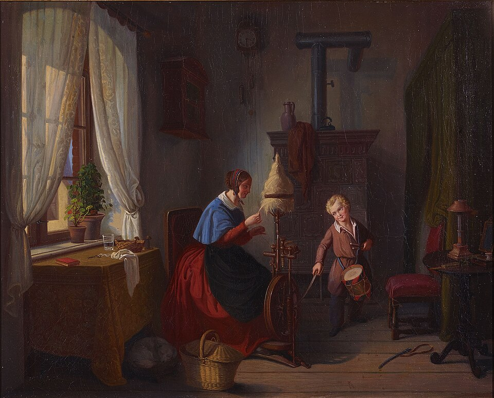
画像を拡大 ＋《糸車を回す女性とサーベルを持った太鼓少年》
- 作者
- ゲオルク・フリードリヒ・ケルスティング
- 制作時期
- 1828年
- 所在地・所蔵
- ギュストロー市立博物館
- 素材・形式
- 絵画
- 原題
- Frau am Spinnrad und Trommelbube mit Säbel
- 動画の年代
- 1827年
出典・画像について
18世紀末のロココや、フランスから入ったアンピール様式の室内は、華麗な装飾に加え、マホガニーなど高級木材を使っていました。対してビーダーマイヤーでは、高価な輸入材より、その土地で手に入る木材を用います。理由の一つは、戦争で疲弊し、高い輸入材を買う余裕がなかったことです。もう一つは、家に出入りする人が家族や親しい友人に限られるようになり、他人に見せる豪華さより実用性が重要になったことでした。大勢を招けば集会や陰謀を疑われ、監視対象になりかねないため、来客を抑えることには、危険を減らす面もありました。
担当中断までに同一写真の特定結果なし。別宮殿の似た部屋で代用せず保留。
《豪華な赤い室内（場所未同定）》
- 作者
- 撮影者不詳
- 制作時期
- 不明
- 所在地・所蔵
- 未確定
- 素材・形式
- 室内写真
出典・画像について
担当中断までに同定結果なし。別個体で代用せず保留。
《金色の装飾椅子（個体未同定）》
- 作者
- 製作者不詳
- 制作時期
- 不明
- 所在地・所蔵
- 未確定
- 素材・形式
- 金色の木枠と緑の張り座（画面から判別できる範囲）
出典・画像について
居心地のよさと職人の家具
動画 9:52～ビーダーマイヤーの暮らしで大切な言葉がゲミュートリヒカイトです。日本語で言い表すのは難しいものの、居心地のよさや快適さに近い感覚です。息苦しい外界から家庭へ目を向けた人々は、家族と暮らす快適さや、飾らない自然に美を求めました。家族と過ごし、ゆったりした時間を味わう感覚が、この言葉に重なります。
ウィーンでは、ダンハウザー工房がよく知られます。現在のように既製品から選ぶのではなく、家の人が職人の工房へ行き、素材やデザインの相談から始めました。工房は市民の求める簡素で実用的な家具に応えながら、滑らかな曲線も取り入れて遊び心を表します。単にお金がないから仕方なく選ぶのではなく、自分たちの価値観や生活様式に合うものとして、積極的に選び取った家具だったのです。
Met比較 https://www.metmuseum.org/art/collection/search/208558 と231805、AIC https://www.artic.edu/artworks/69843/chair 。別型の公開写真で代用せず保留。
《ダンハウザー工房のサイドチェア（動画表示、個体未確定）》
- 作者
- ダンハウザー工房（画面表示、帰属未確定）
- 制作時期
- 不明
- 所在地・所蔵
- 動画の個体・所蔵先未確定
- 素材・形式
- 木製椅子・張り座
- 動画の年代
- 1820年
出典・画像について
動画の年代表記：1820年。作品情報と区別。
担当中断後、親がAIC公開APIを1回確認したがJSONでない拒否応答で作品・個体・画像を確認できず終了。1825年を既知の個体年と断定しない。
《ダンハウザー工房のセンターテーブル（動画表示、個体未確定）》
- 作者
- ダンハウザー工房（画面表示、帰属未確定）
- 制作時期
- 不明
- 所在地・所蔵
- 未確定
- 素材・形式
- 木製テーブル
- 動画の年代
- 1825年
出典・画像について
動画の年代表記：1825年。作品情報と区別。
室内画と身近な自然
動画 10:52～家具や住まいへの愛着は、ツィンマービルトの流行にも表れます。室内像、室内画という意味で、人を描かず、部屋だけを描きました。自宅の空間を、自分たちのアイデンティティとして表すものです。凝った室内を写真に残したくなる現代の感覚にも通じます。

《黄色い室内を描いた室内画》
- 作者
- レオポルト・ツィールケ
- 制作時期
- 1825年頃
- 所在地・所蔵
- ロイヤル・コレクション（Commons記録）
- 素材・形式
- 室内画
- 原題
- Zimmerbild
出典・画像について
限定検索で同じ図像を確定できず保留。似た緑色の部屋で代用しない。
《緑の室内を描いた室内画（未同定）》
- 作者
- 未確定
- 制作時期
- 不明
- 所在地・所蔵
- 未確定
- 素材・形式
- 室内画
出典・画像について
都市の喧騒を離れ、家族で緑地や公園を散歩する習慣も楽しまれました。着飾った社交界よりも、飾らない自然を尊ぶ心がうかがえます。

《日曜日の散歩》
- 作者
- カール・シュピッツヴェーク
- 制作時期
- 1841年
- 所在地・所蔵
- ザルツブルク博物館（3-31）
- 素材・形式
- 板に油彩
- 原題
- Der Sonntagsspaziergang
出典・画像について

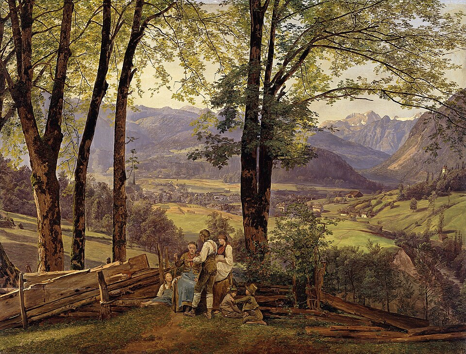
画像を拡大 ＋《イシュルの眺め》
- 作者
- フェルディナント・ゲオルク・ヴァルトミュラー
- 制作時期
- 1838年
- 所在地・所蔵
- 旧国立美術館、ベルリン（A I828）
- 素材・形式
- オーク材に油彩
- 原題
- Blick auf Ischl
出典・画像について
革命後のデザインと美術
1848年の革命と装飾の復活
動画 11:39～1848年、パリの二月革命の知らせが届くと、ウィーンやベルリンでも革命の気運が高まりました。民衆が蜂起した三月革命により、メッテルニヒは辞職し、国外へ逃れます。ウィーン体制が終わり、それまでの検閲もなくなることで、人々の関心は政治へ向きました。1850年代にビーダーマイヤーという風刺人物が登場したのは、この転換期にまだ内向きだった小市民を揶揄する、当時の社会の性格を表しているともいえます。
人々が国外へ目を向けると、フランス発のロココ・リバイバルなどに関心が移りました。その例が、背もたれを気球のような形にしたバルーンバック・チェアです。優雅な曲線と実用性を両立し、高級木材と華麗な装飾を伴う重厚な家具として広まりました。使いやすさだけでなく、周囲へ社会的地位を示す役割も感じられます。
作者・年・個体・撮影者・条件が未確定。別組で代用せず保留。
《バルーンバック・チェア6脚（個体未同定）》
- 作者
- 未確定
- 制作時期
- 不明
- 所在地・所蔵
- 動画の組の所蔵・販売記録未確定
- 素材・形式
- 木製椅子と赤い張り地
出典・画像について
トーネットの椅子と歴史主義
動画 12:50～ロココ・リバイバルが流行する一方で、簡素で機能的な家具を作る人もいました。代表がミヒャエル・トーネットです。曲木技術を発展させ、安いブナ材の椅子を工場で大量生産できるようにしました。ベントウッド・チェアNo.14は、「椅子の中の椅子」と評されるほどのベストセラーです。安価で入手しやすく、カフェやビストロに置かれて都市のカフェ文化を支えました。装飾家具が地位を取り戻す一方で、工業化はさらに簡素な椅子も普及させます。過去の様式への憧れと、新しい実用的なデザインとの間で、人々の価値観が揺れる時代になったといえます。

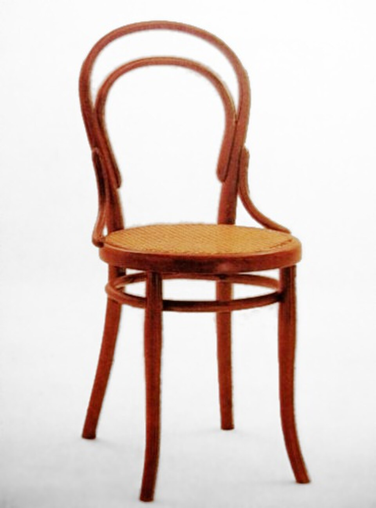
画像を拡大 ＋《ベントウッド・チェアNo.14》
- 作者
- ミヒャエル・トーネット（意匠）
- 制作時期
- 1859年（意匠）／写真の個体の製作年は不明
- 所在地・所蔵
- 動画写真の個体は未確定。同型所蔵例：デザイン・ミュージアム（1870年製作）
- 素材・形式
- 同型作品：ブナ材の曲木と籐座
- 原題
- Side Chair No. 14
- 動画の年代
- 1859年
出典・画像について
動画で使われたNo.14の写真。1859年は意匠の年で、撮影された椅子の製造年・所蔵先は不明。
画像出典：Holger.Ellgaard、色調・背景調整 BenFrantzDale / Wikimedia Commons
CC BY-SA 3.0
1850年代から、ドイツ美術は歴史主義へ傾いていきます。神聖ローマ皇帝や中世ドイツの歴史を描く美術です。ナポレオン戦争後に高まった統一への気運は、メッテルニヒのウィーン体制に抑え込まれていました。体制の崩壊後は、その気運を歴史画や記念的芸術で視覚化し、国家のアイデンティティを作ろうとしたのです。1871年、ビスマルクを中心とするプロイセンが統一し、ドイツ帝国が成立すると、国家の正当性を示す歴史画中心の文化・芸術がさらに推進されました。しかし1890年代には、国家やアカデミーの保守性・閉鎖性へ反発し、独自の表現と展示の場を求める分離派が登場します。

《ヴァレンシュタインの遺骸の前のゼーニ》
- 作者
- カール・テオドール・フォン・ピロティ
- 制作時期
- 1855年
- 所在地・所蔵
- ノイエ・ピナコテーク／バイエルン州立絵画コレクション（WAF770）
- 素材・形式
- 油彩・カンヴァス
- 原題
- Seni vor der Leiche Wallensteins
出典・画像について
画像出典：Karl von Piloty
Public domain / PD-Art / PDM
作品情報：作品・画像・利用条件 · 所蔵館の作品ページ
制作メモ
配信画像には反射があり、動画とはトリミング・色味が異なる。
親による追加加工なし。
要点まとめ
- ビーダーマイヤーは19世紀前半のドイツ・オーストリアで、市民の家庭生活を中心に育った文化様式である。
- 名称は、政治に関心を向けず家庭を大切にする、後の風刺雑誌の架空人物に由来する。
- 戦争の疲弊とウィーン体制の抑圧を背景に、市民は政治参加から家庭の平穏や趣味へ関心を移した。
- 家具は地域の素材と実用性を重視し、他人へ見せる豪華さより、身近な暮らしに合うものが選ばれた。
- ゲミュートリヒカイトは居心地のよさや快適さに近い感覚で、家族との時間や飾らない自然にも結び付く。
- 職人と相談して選ぶ家具や、人を描かず部屋を表す室内画には、自宅への愛着が表れている。
- 1848年の革命後は政治や国外への関心が高まり、ロココ・リバイバルなどの装飾家具も再び広まった。
- 一方でトーネットの曲木椅子は簡素さと量産性を実現し、都市のカフェ文化を支えるなど近代デザインへつながった。
確認問題
答えを考えてから開いてください。選択問題は選ぶとすぐ正誤と解説が出ます（選択肢の順番は開くたびに変わります）。各問題のリンクから該当の章や作品カードへ戻れます。
選択問題：0／4問回答・正解0
A. 一問一答答えを考えてから開く
問1ビーダーマイヤーという名称は、どのような人物に由来するか。
答えを見る
問2ゲミュートリヒカイトは、日本語のどのような感覚に近いと説明されるか。
答えを見る
問3人物を描かず自宅の室内だけを描く絵を、本文では何と呼ぶか。
答えを見る
B. 4択選ぶとすぐ正誤と解説
問4ウィーン会議が原則とした二つの考えはどれか。
→ 本文で確認（ウィーン会議と正統主義）
問5簡素な家具が選ばれた理由として、本文に合うものはどれか。
→ 本文で確認（内の暮らしと地域の素材）
問6トーネットのNo.14が都市の生活を支えた理由はどれか。
→ 本文で確認（トーネットの椅子と歴史主義）
C. 図版問題画像を見て答える
問7この室内画のような暮らしで、市民が重視したものはどれか。
→ 作品カードで確認
問8この《日曜日の散歩》は、本文のどのような楽しみに対応するか。